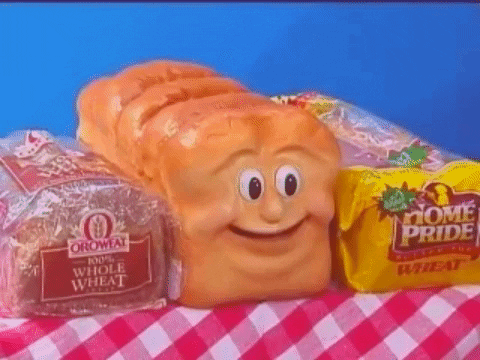
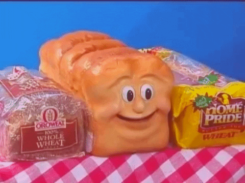

...and welcome to my website!
 Let's get this bread
Let's get this bread
"What are you even going to use this website for?" you so conveniently ask. Well... You know, um... Okay, fine, you have a point. I have no clue what I'm going to use this for. But I'm good at improvisation, and I'll just put things here as I go! Like this! (There's a hidden thing)
What, that wasn't good enough for you? Okay then, I can do better!
My favorite DapperLink videos

Please check out these
videos and subscribe to
our channel. If you do, I'll
give you a cookie.